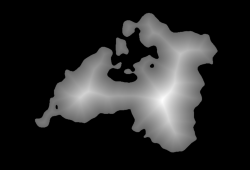
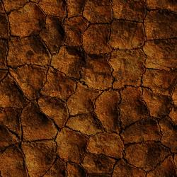
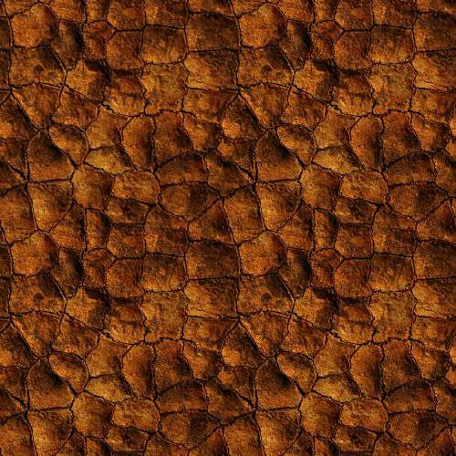
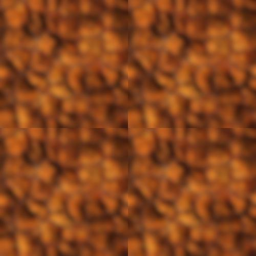
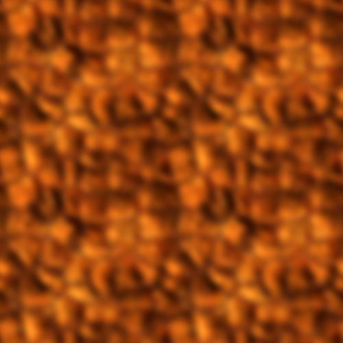
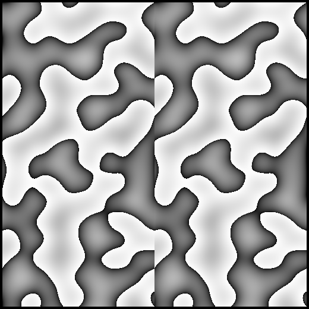
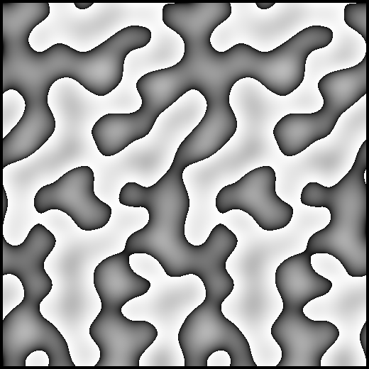
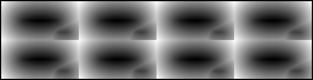
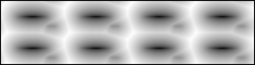

v0.0.4 ~ 9911235
Snowy 
User's Guide | API Reference
Snowy is a tiny module for manipulating and generating floating-point images.
- Small and flat API (free functions only).
- Written purely in Python 3.
- Accelerated with numba.
- Configurable boundaries (wrap modes).
Snowy does not define a special class for images. Instead, images are always three-dimensional
numpy arrays in row-major order.
For example, RGB images have shape [height,width,3] and grayscale images have shape
[height,width,1]. Snowy provides some utility functions that make it easy to work with other
modules (see interop).
Snowy is not an Image IO library, but for convenience it provides load and
export functions that have limited support for PNG, EXR, and JPEG.
If you're interested in tone mapping and other HDR operations, check out the
hydra module. If you wish to simply load / store raw
floating-point data, consider using npy files instead of image files. The relevant functions are
numpy.load and
numpy.save.
To install and update snowy, do this:
pip3 install -U snowy
This snippet does a resize, then a blur, then horizontally concatenates the two
images.
import snowy
source = snowy.load('poodle.png')
source = snowy.resize(source, height=200)
blurry = snowy.blur(source, radius=4.0)
snowy.export(snowy.hstack([source, blurry]), 'diptych.png')
The next snippet first magnifies an image using a nearest-neighbor filter, then using the default
Mitchell filter.
parrot = snowy.load('parrot.png')
height, width = parrot.shape[:2]
nearest = snowy.resize(parrot, width * 6, filter=snowy.NEAREST)
mitchell = snowy.resize(parrot, width * 6)
snowy.show(snowy.hstack([nearest, mitchell]))
gibbons = snowy.load('gibbons.jpg')
rotated = snowy.rotate(gibbons, 180)
flipped = snowy.vflip(gibbons)
triptych = snowy.hstack([gibbons, rotated, flipped],
border_width=4, border_value=[0.5,0,0])

If you need to crop an image, just use numpy slicing.
For example, this loads an OpenEXR image then crops out the top half:
sunrise = snowy.load('sunrise.exr')
cropped_sunrise = sunrise[:100,:,:]
snowy.show(cropped_sunrise / 50.0) # darken the image
To copy a section of one image into another, simply use numpy slicing.
However, to achieve "source-over" style alpha blending, using raw numpy math would be cumbersome.
Snowy provides compose to make this easier:
icon = snowy.load('snowflake.png')
icon = snowy.resize(snowflake, height=100)
sunset[:100,200:300] = snowy.compose(sunset[:100,200:300], icon)
snowy.show(sunset)
Combining operations like blur and compose can be
used to create a drop shadow:
# Extend the 100x100 snowflake image on 4 sides to give room for blur.
shadow = np.zeros([150, 150, 4])
shadow[25:-25,25:-25,:] = icon
# Invert the colors but not the alpha.
white = shadow.copy()
white[:,:,:3] = 1.0 - white[:,:,:3]
# Blur the shadow, then "strengthen" it.
shadow = snowy.blur(shadow, radius=10.0)
shadow = snowy.compose(shadow, shadow)
shadow = snowy.compose(shadow, shadow)
shadow = snowy.compose(shadow, shadow)
# Compose the white flake onto its shadow.
dropshadow = snowy.compose(shadow, white)
Snowy's generate_noise function generates a single-channel image whose values are
in [-1, +1]. Here we create a square noise image that can be tiled horizontally:
n = snowy.generate_noise(100, 100, frequency=4, seed=42, wrapx=True)
n = np.hstack([n, n])
snowy.show(0.5 + 0.5 * n)
If you're interested in other types of noise, or if you need a super-fast noise generator, you might
want to try pyfastnoisesimd.
This example uses generate_sdf to create a signed distance field from a monochrome picture of two circles
enclosed by a square. Note the usage of unitize to adjust the values into the [0,1] range.
circles = snowy.load('circles.png')
sdf = snowy.unitize(snowy.generate_sdf(circles != 0.0))
snowy.show(snowy.hstack([circles, sdf]))
Combining Snowy's unique features with numpy can be used to create interesting procedural images.
The following example creates an elevation map for an imaginary island.
def create_falloff(w, h, radius=0.4, cx=0.5, cy=0.5):
hw, hh = 0.5 / w, 0.5 / h
x = np.linspace(hw, 1 - hw, w)
y = np.linspace(hh, 1 - hh, h)
u, v = np.meshgrid(x, y, sparse=True)
d2 = (u-cx)**2 + (v-cy)**2
return 1-snowy.unitize(snowy.reshape(d2))
def create_island(seed, freq=3.5):
w, h = 750, 512
falloff = create_falloff(w, h)
n1 = 1.000 * snowy.generate_noise(w, h, freq*1, seed+0)
n2 = 0.500 * snowy.generate_noise(w, h, freq*2, seed+1)
n3 = 0.250 * snowy.generate_noise(w, h, freq*4, seed+2)
n4 = 0.125 * snowy.generate_noise(w, h, freq*8, seed+3)
elevation = falloff * (falloff / 2 + n1 + n2 + n3 + n4)
mask = elevation < 0.4
elevation = snowy.unitize(snowy.generate_sdf(mask))
return (1 - mask) * np.power(elevation, 3.0)
snowy.export(create_island(10), 'island.png')

Snowy's blur, resize,
generate_noise, and generate_sdf
functions all take wrapx and wrapy arguments, both of which default to False. These arguments
tell Snowy how to sample from outside the boundaries of the source image or noise function.
To help understand these arguments, consider this tileable image and its 2x2 tiling:


Next, let's try blurring the tile naively:

See the seams? Now let's blur it with wrapx and wrapy set to True when we call
blur:

The wrap arguments are also useful for 2D noise. One way of making tileable gradient noise is to
sample 3D noise on the surface of a cylinder, torus, or cube. However Snowy can do this more
efficiently by generating 2D noise with modulus arithmetic.
Here we created a 128x256 tile using generate_noise without the
wrapx argument, then horizontally tiled it twice:

Here's another tiling of gradient noise, but this time the tile was generated with wrapx set to
True:

Snowy's generate_sdf function also takes wrap arguments. For example
here's a distance field in a 4x2 tiling:

Here's the same distance field, this time with wrapx and wrapy set to True:

Snowy's algorithms require images to be row-major three-dimensional float64 numpy arrays, with
color channels living in the trailing dimension. If you're working with another module that does not
follow this convention, consider using one of the following interop functions.
- To add or remove the trailing 1 from the shape of grayscale images, use
reshape and unshape.
- To swap color channels in or out of the leading dimension, use
to_planar and from_planar.
- To cast between
float64 and other types, just use numpy. For example,
np.uint8(myimg * 255) or np.float64(myimg) / 255.
- To swap rows with columns, use numpy's
swapaxes function.